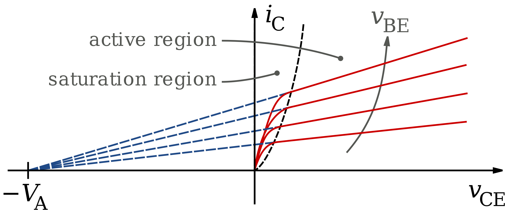
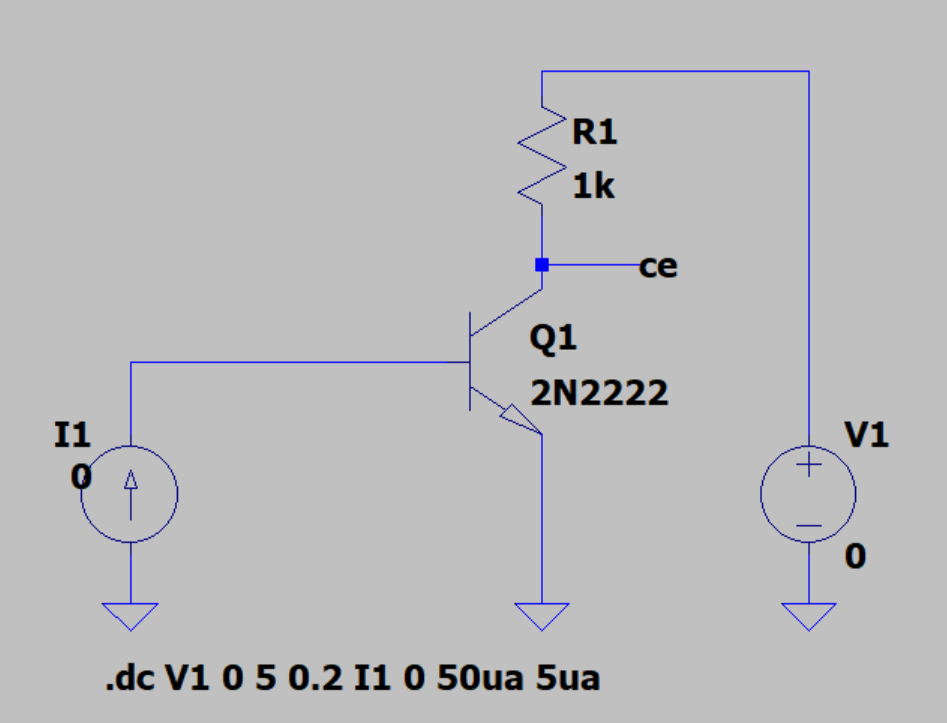
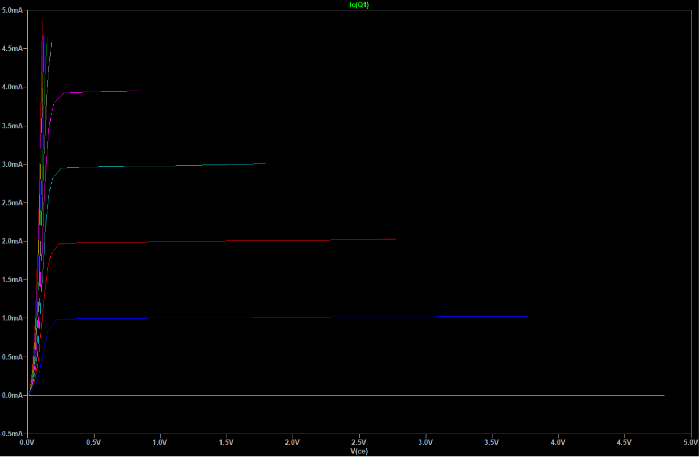
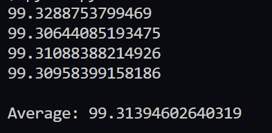

To find the Early effect voltage of any particular transistor, one can utilize and derive a formula to calculate using this equation for the large-signal model:
Or this equation for the small-signal model:
However, since the 2N2222 NPN transistor is a BJT, a much simpler way to find the Early voltage is by utilizing the slope from the -to- characteristic curves in the forward active region, as demonstrated by the illustration below.
Regardless of the value of the constant base current , all slopes will have the same value of for
To generate our -to- characteristic curves on a graph, we will create an LTspice schematic to model our circuit and simulate it. The schematic can be seen below.
We will create our simulation by running a DC sweep from to on the voltage source, and from to for the current source in 4 separate increments.
After the simulation is complete, this is what we get:
For the purpose of this problem, I exported the data and pass them through a Python script to calculate the Early voltage for each increment, as well as overall average. The results can be seen below.
As you can see, the Early voltage of the given 2N2222 transistor is approximately 99.3V, which is very close to the 100V commonly cited for these types of transistors.
For more details on the calculations in Python, here is the script I used for calculating the Early voltages of each increment.
import statistics
input_data = [
(1.027752e-03, 1.029726e-03),
(2.028514e-03, 2.032411e-03),
(3.003599e-03, 3.009369e-03),
(3.954082e-03, 3.961678e-03)
]
results = []
for y1, y2 in input_data:
x1, x2 = 4.8, 5.0
m = (y2 - y1) / (x2 - x1)
b = m * (0 - x1) + y1
x = (0 - b) / m
Va = abs(x)
results.append(Va)
print(str(Va))
print("\nAverage: " + str(statistics.mean(results)))